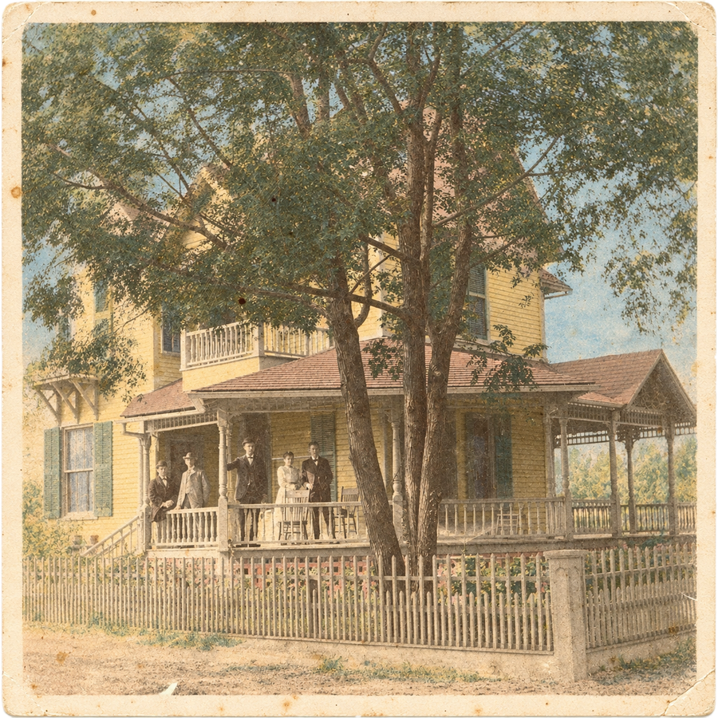
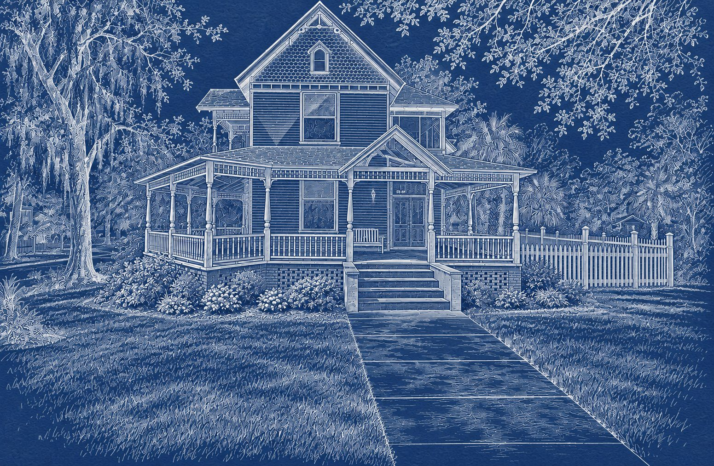

photographed circa 1900306 NE Third St. · Gainesville, Fla.
The Albert Blanding House
Built in 1899 in Gainesville’s Duck Pond, and home to one of Florida’s most honored citizens.
The early photograph shows five people on the porch. If you know who they are, we’d love to hear from you.
Built in 1899, the Albert Blanding House is part of Gainesville’s historic Duck Pond neighborhood. Historical accounts credit its construction to Horatio Davis, a judge and two-time Gainesville mayor.
Its best-known resident was Albert Hazen Blanding, the soldier and conservationist Camp Blanding is named for. He owned it until 1958.
Seven years before the University of Florida opened its Gainesville campus, this house was already standing.
the house, circa 1900

hand-tinted, as a 1905 postcard (colorized for this site)
Lieutenant General
Albert Hazen Blanding1876 – 1970
Soldier, Florida civic leader and conservationist. Named a Great Floridian in 2000.
the house today, photo enhanced

drawn up for the next chapter
1899
A judge builds a Queen Anne
Historical accounts credit the house to Horatio Davis, a judge who was twice elected mayor of Gainesville. He built it in the Queen Anne style of the day: gingerbread trim, a fish-scale shingled front gable, and the deep wraparound porches that still define it. Davis died in 1900, the year after it was finished.
circa 1900
1900
Albert Blanding moves in
By 1900 the house was home to Albert Hazen Blanding, then in his twenties. He had grown up in Gainesville, graduated first in his class from East Florida Seminary, a predecessor of the University of Florida, and enlisted in the Gainesville Guards. Local accounts place him here from 1900 to 1910, and he kept the house until 1958.
colorized for this site
1917
A general from NE Third Street
Blanding’s career took him from the Florida National Guard to France in World War I, and then to the head of the National Guard Bureau in Washington.
Albert Hazen Blanding1876 – 1970
1894Graduates first in his class from East Florida Seminary in Gainesville
World War ICommands an infantry brigade in France and receives the Distinguished Service Medal
1936–1940Chief of the National Guard Bureau, appointed by President Franklin D. Roosevelt
1939Camp Blanding, Florida’s National Guard training center, is named in his honor
1940sHelps establish Everglades National Park
2000Named a Great Floridian by the Florida Department of State
1980
A protected neighborhood
The Blanding family’s ownership ended in 1958. In 1980 the Duck Pond was listed on the National Register of Historic Places as the Northeast Gainesville Residential District, recognizing more than two hundred of its historic buildings, this one among its neighbors.
today
2026
A new chapter
We bought the house in 2026 to share it with Gator families. We’re keeping as much of its character as we can, and adding the comforts a modern stay needs.
drawn up for the next chapter
Then and now
thennow
Do you know this house?
We’re still piecing together who lived here over the last 127 years. If you have an old photo, a family name, or a story from the neighborhood, please write to us. We’ll share what we learn here.
Questions?
Write to us any time about the house or your dates.
National Register of Historic Places: Northeast Gainesville Residential District, listed February 12, 1980.
“Judge Horatio Davis,” obituary, Gainesville Sun, June 4, 1900.
Albert H. Blanding Papers, Department of Special and Area Studies Collections, University of Florida Libraries.
Florida Department of State, Great Floridians 2000 Program.
Florida Memory, State Library and Archives of Florida: Albert H. Blanding.
National Guard Bureau: “Former Chief of National Guard Bureau named as Great Floridian.”
The drawings of the house, the colorized postcard, the engraved portrait and the keepsakes on this site were created for it as illustrations; they are not historical documents. The photographs of the house and the painted portrait of General Blanding are real.